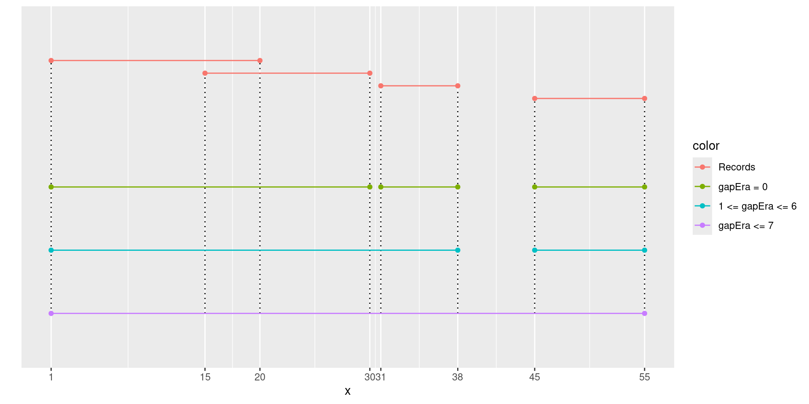
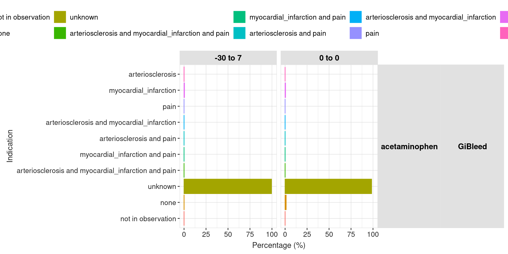
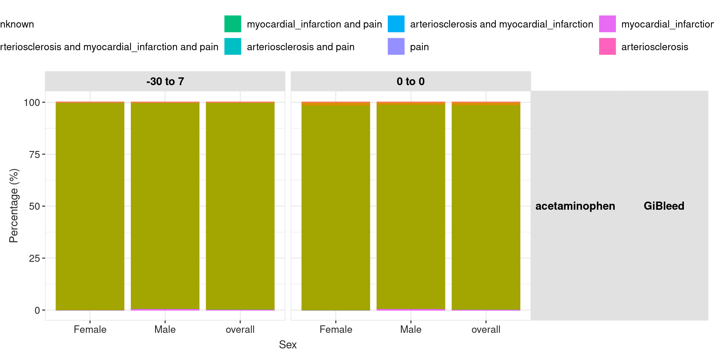
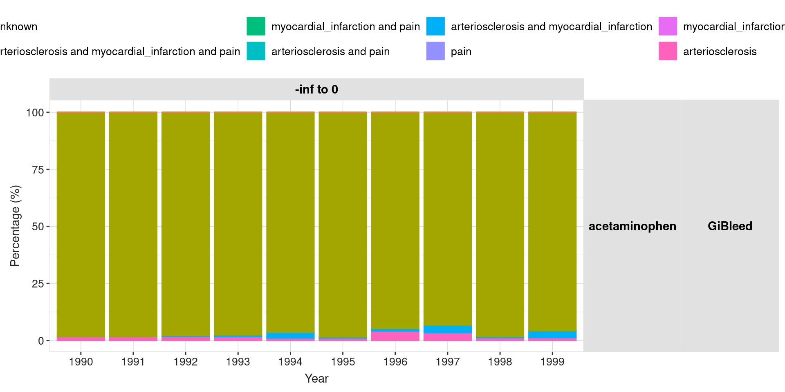
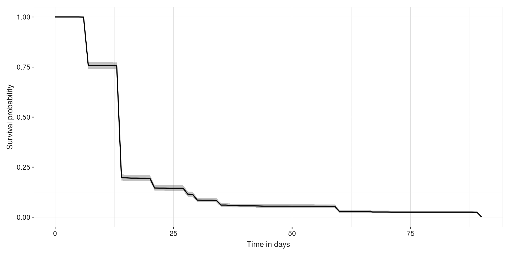
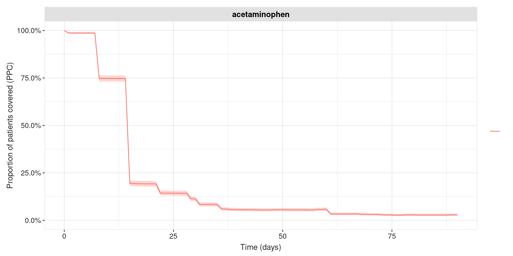
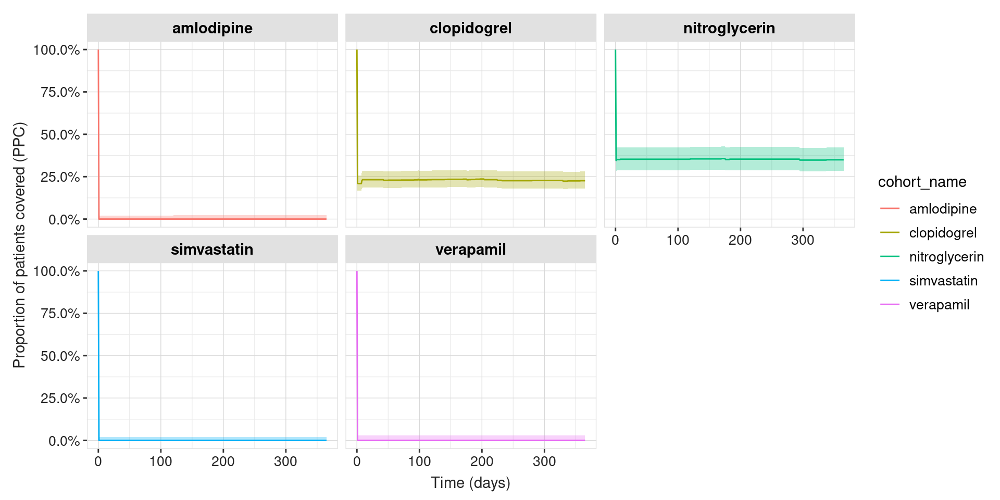
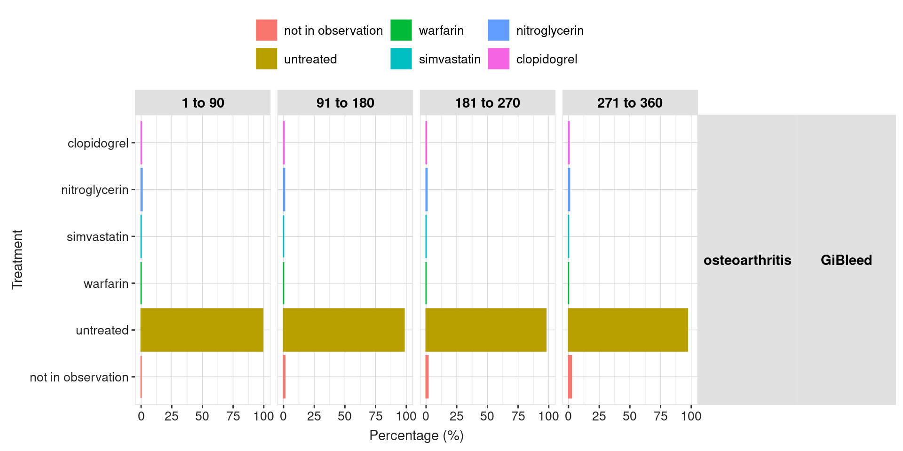
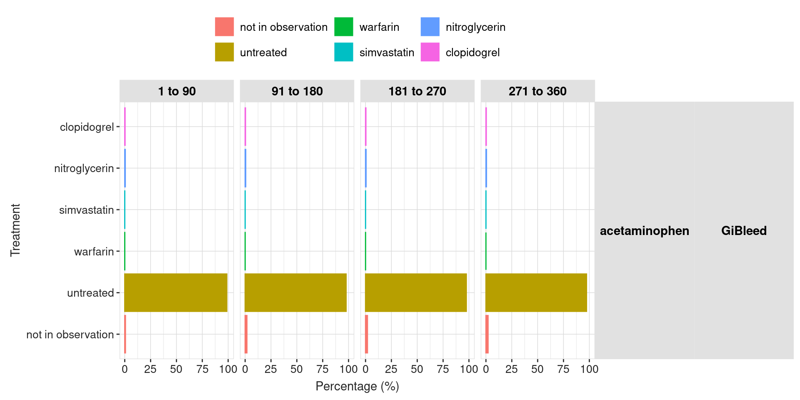
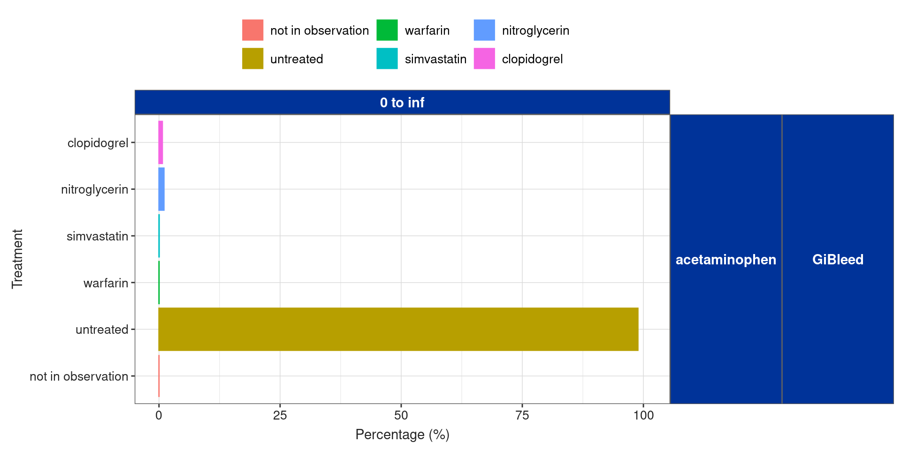

install.packages("DrugUtilisation")DrugUtilisation
An overview of GitHub and Codelists
2025-11-21
Introduction
Drug Utilisation Studies (DUS) were defined by the World Health Organization as studying the marketing, distribution, prescription, and use of medicinal products in a society, with special emphasis on the resulting medical and socioeconomic consequences (WHO, 2003).
This package aims to standardise and provide the tools to conduct Drug Utilisation studies as of the Darwin-EU Catalogue of Standard Analytics.

The package
Create a reference to a cdm object
For this example we are going to use the GiBleed synthetic test database:
library(omock)
library(duckdb)
library(CDMConnector)
library(dplyr)
library(CodelistGenerator)
library(DrugUtilisation)
library(CohortConstructor)
library(PatientProfiles)
library(ggplot2)
library(clock)
library(omopgenerics)
library(CohortSurvival)
cdm <- mockCdmFromDataset(datasetName = "GiBleed", source = "duckdb")
cdm$drug_exposure <- cdm$drug_exposure |>
mutate(quantity = sql("floor(random() * 6) + 1")) |>
mutate(quantity = case_when(
quantity == 1 ~ 0,
quantity == 2 ~ 1,
quantity == 3 ~ 5,
quantity == 4 ~ 10,
quantity == 5 ~ 30,
quantity == 6 ~ 100
)) |>
compute(name = "drug_exposure")Generate a drug cohort
For this example we are going to use all records of acteaminophen:
The results is the cdm object with the new cohort instantiated.
── # OMOP CDM reference (duckdb) of GiBleed ────────────────────────────────────────────────────────────────────────────• omop tables: care_site, cdm_source, concept, concept_ancestor, concept_class, concept_relationship, concept_synonym,
condition_era, condition_occurrence, cost, death, device_exposure, domain, dose_era, drug_era, drug_exposure,
drug_strength, fact_relationship, location, measurement, metadata, note, note_nlp, observation, observation_period,
payer_plan_period, person, procedure_occurrence, provider, relationship, source_to_concept_map, specimen, visit_detail,
visit_occurrence, vocabulary• cohort tables: dus_cohort• achilles tables: -• other tables: -Cohort objects
The cohort objects have some attributes:
[1] "cohort_table" "cdm_table" "GeneratedCohortSet" "tbl_duckdb_connection"
[5] "tbl_dbi" "tbl_sql" "tbl_lazy" "tbl" - Settings
- Counts
- Attrition
- Codelist
Cohort attributes
Settings:
# A tibble: 1 × 4
cohort_definition_id cohort_name cdm_version vocabulary_version
<int> <chr> <chr> <chr>
1 1 acetaminophen 5.3 v5.0 18-JAN-19 Cohort attributes
Cohort attrition:
# A tibble: 4 × 7
cohort_definition_id number_records number_subjects reason_id reason excluded_records excluded_subjects
<int> <int> <int> <int> <chr> <int> <int>
1 1 14205 2679 1 Initial qualifying e… 0 0
2 1 14205 2679 2 Record in observation 0 0
3 1 14205 2679 3 Not missing record d… 0 0
4 1 13908 2679 4 Merge overlapping re… 297 0gapEra parameter
gapEra parameter can be used to concatenate different records.
Number of days between two continuous exposures to be considered in the same era. Records that have fewer days between them than this gap will be concatenated into the same cohort record.gapEra parameter
Generate a drug cohort
# A tibble: 5 × 7
cohort_definition_id number_records number_subjects reason_id reason excluded_records excluded_subjects
<int> <int> <int> <int> <chr> <int> <int>
1 1 14205 2679 1 Initial qualifying e… 0 0
2 1 14205 2679 2 Record in observation 0 0
3 1 14205 2679 3 Not missing record d… 0 0
4 1 13908 2679 4 Merge overlapping re… 297 0
5 1 13860 2679 5 Collapse cohort with… 48 0Inclusion criteria
Four functions to add inclusion criteria to our cohort:
- Washout
requirePriorDrugWashout()(requireConceptIntersect) - First observation
requireIsFirstDrugEntry()(requireIsFirstEntry) - Prior observation
requireObservationBeforeDrug()(requirePriorObservation) - Date range
requireDrugInDateRange()(requireInDateRange)
Important considerations
Not all inclusion criteria are commutable operations (A + B != B + A):
Not commutable:
prior washout+prior observation!=prior observation+prior washoutprior washout+first!=first+prior washoutprior washout+date range!=date range+prior washoutfirst+prior observation!=prior observation+firstfirst+date range!=date range+first
Commutable:
date range+prior observation==prior observation+date range
Recommended order
Having all this into account the recommended order to apply criteria would be:
Require a prior drug washout or require first drug entry (particular case).
Require a prior observation before the drug episode.
Require the drugs to be in a certain date range.
Vignette to create cohorts
https://darwin-eu-dev.github.io/DrugUtilisation/articles/create_cohorts.html
Your turn
Can you create a cohort with all the records of ‘simvastatin’ concatenating records separated by 90 days or less and the following inclusion criteria:
First record ever
At least 365 days of prior observation
Cohort start date between ‘2010-01-01’ and ‘2021-12-31’.
# A tibble: 1 × 3
cohort_definition_id number_records number_subjects
<int> <int> <int>
1 1 57 57💡 Click to see solution
codelist <- getDrugIngredientCodes(cdm = cdm, name = "simvastatin", nameStyle = "{concept_name}")
cdm$simvastatin_cohort <- conceptCohort(
cdm = cdm,
conceptSet = codelist,
name = "simvastatin_cohort"
) |>
collapseCohorts(gap = 90) |>
requireIsFirstEntry() |>
requirePriorObservation(minPriorObservation = 365) |>
requireInDateRange(dateRange = as.Date(c('2010-01-01', '2021-12-31')))
cohortCount(cdm$simvastatin_cohort)# A tibble: 1 × 3
cohort_definition_id number_records number_subjects
<int> <int> <int>
1 1 57 57Drug usage
result <- cdm$dus_cohort |>
summariseDrugUtilisation(
ingredientConceptId = 1125315L,
indexDate = "cohort_start_date",
censorDate = "cohort_end_date",
restrictIncident = TRUE,
gapEra = 30,
numberExposures = TRUE,
numberEras = TRUE,
daysExposed = TRUE,
daysPrescribed = TRUE,
timeToExposure = FALSE,
initialQuantity = TRUE,
cumulativeQuantity = TRUE,
initialDailyDose = TRUE,
cumulativeDose = TRUE,
estimates = c("q25", "median", "q75")
)Drug usage
| Concept set | Ingredient | Variable name | Estimate name |
CDM name
|
|---|---|---|---|---|
| GiBleed | ||||
| acetaminophen | ||||
| overall | overall | number records | N | 13,860 |
| number subjects | N | 2,679 | ||
| ingredient_1125315_descendants | overall | number exposures | Median (Q25 - Q75) | 1 (1 - 1) |
| cumulative quantity | Median (Q25 - Q75) | 10.00 (1.00 - 30.00) | ||
| initial quantity | Median (Q25 - Q75) | 10.00 (1.00 - 30.00) | ||
| initial exposure duration | Median (Q25 - Q75) | 15 (8 - 15) | ||
| number eras | Median (Q25 - Q75) | 1 (1 - 1) | ||
| days exposed | Median (Q25 - Q75) | 15 (8 - 15) | ||
| days prescribed | Median (Q25 - Q75) | 15 (8 - 15) | ||
| Acetaminophen | cumulative dose milligram | Median (Q25 - Q75) | 1,625.00 (217.00 - 9,750.00) | |
| initial daily dose milligram | Median (Q25 - Q75) | 108.33 (13.11 - 443.18) | ||
Indications
summariseIndication():
To summarise mutually exclusive indications.
Define a window respect to the ‘cohort_start_date’.
Indications must be instantiated beforehand as cohorts.
Unknown indication (check a table to see if there is a record).
Indications
Let’s instantiate the cohorts of interest:
Indciations
Rows: 40
Columns: 13
$ result_id <int> 1, 1, 1, 1, 1, 1, 1, 1, 1, 1, 1, 1, 1, 1, 1, 1, 1, 1, 1, 1, 1, 1, 1, 1, 1, 1, 1, 1, 1, 1, 1, …
$ cdm_name <chr> "GiBleed", "GiBleed", "GiBleed", "GiBleed", "GiBleed", "GiBleed", "GiBleed", "GiBleed", "GiBl…
$ group_name <chr> "cohort_name", "cohort_name", "cohort_name", "cohort_name", "cohort_name", "cohort_name", "co…
$ group_level <chr> "acetaminophen", "acetaminophen", "acetaminophen", "acetaminophen", "acetaminophen", "acetami…
$ strata_name <chr> "overall", "overall", "overall", "overall", "overall", "overall", "overall", "overall", "over…
$ strata_level <chr> "overall", "overall", "overall", "overall", "overall", "overall", "overall", "overall", "over…
$ variable_name <chr> "Indication on index date", "Indication on index date", "Indication on index date", "Indicati…
$ variable_level <chr> "arteriosclerosis", "arteriosclerosis", "myocardial_infarction", "myocardial_infarction", "pa…
$ estimate_name <chr> "count", "percentage", "count", "percentage", "count", "percentage", "count", "percentage", "…
$ estimate_type <chr> "integer", "percentage", "integer", "percentage", "integer", "percentage", "integer", "percen…
$ estimate_value <chr> "0", "0", "64", "0.461760461760462", "0", "0", "0", "0", "0", "0", "0", "0", "0", "0", "13633…
$ additional_name <chr> "window_name", "window_name", "window_name", "window_name", "window_name", "window_name", "wi…
$ additional_level <chr> "0 to 0", "0 to 0", "0 to 0", "0 to 0", "0 to 0", "0 to 0", "0 to 0", "0 to 0", "0 to 0", "0 …Indications
CDM name
|
||
|---|---|---|
GiBleed
|
||
| Indication | Estimate name |
Cohort name
|
| acetaminophen | ||
| Indication on index date | ||
| arteriosclerosis | N (%) | 0 (0.00 %) |
| myocardial_infarction | N (%) | 64 (0.46 %) |
| pain | N (%) | 0 (0.00 %) |
| arteriosclerosis and myocardial_infarction | N (%) | 0 (0.00 %) |
| arteriosclerosis and pain | N (%) | 0 (0.00 %) |
| myocardial_infarction and pain | N (%) | 0 (0.00 %) |
| arteriosclerosis and myocardial_infarction and pain | N (%) | 0 (0.00 %) |
| unknown | N (%) | 13,633 (98.36 %) |
| none | N (%) | 163 (1.18 %) |
| not in observation | N (%) | 0 (0.00 %) |
| Indication from 30 days before to 7 days after the index date | ||
| arteriosclerosis | N (%) | 5 (0.04 %) |
| myocardial_infarction | N (%) | 64 (0.46 %) |
| pain | N (%) | 0 (0.00 %) |
| arteriosclerosis and myocardial_infarction | N (%) | 0 (0.00 %) |
| arteriosclerosis and pain | N (%) | 0 (0.00 %) |
| myocardial_infarction and pain | N (%) | 0 (0.00 %) |
| arteriosclerosis and myocardial_infarction and pain | N (%) | 0 (0.00 %) |
| unknown | N (%) | 13,784 (99.45 %) |
| none | N (%) | 7 (0.05 %) |
| not in observation | N (%) | 0 (0.00 %) |
Indications
Indications
Output of ploting functions are ggplot2 objects.
Indications
Currently considering to add support for plotly.
Indications (new plot)
Let’s say we conducted the analysis stratified by sex:
Rows: 120
Columns: 13
$ result_id <int> 1, 1, 1, 1, 1, 1, 1, 1, 1, 1, 1, 1, 1, 1, 1, 1, 1, 1, 1, 1, 1, 1, 1, 1, 1, 1, 1, 1, 1, 1, 1, …
$ cdm_name <chr> "GiBleed", "GiBleed", "GiBleed", "GiBleed", "GiBleed", "GiBleed", "GiBleed", "GiBleed", "GiBl…
$ group_name <chr> "cohort_name", "cohort_name", "cohort_name", "cohort_name", "cohort_name", "cohort_name", "co…
$ group_level <chr> "acetaminophen", "acetaminophen", "acetaminophen", "acetaminophen", "acetaminophen", "acetami…
$ strata_name <chr> "overall", "overall", "overall", "overall", "overall", "overall", "overall", "overall", "over…
$ strata_level <chr> "overall", "overall", "overall", "overall", "overall", "overall", "overall", "overall", "over…
$ variable_name <chr> "Indication on index date", "Indication on index date", "Indication on index date", "Indicati…
$ variable_level <chr> "arteriosclerosis", "arteriosclerosis", "myocardial_infarction", "myocardial_infarction", "pa…
$ estimate_name <chr> "count", "percentage", "count", "percentage", "count", "percentage", "count", "percentage", "…
$ estimate_type <chr> "integer", "percentage", "integer", "percentage", "integer", "percentage", "integer", "percen…
$ estimate_value <chr> "0", "0", "64", "0.461760461760462", "0", "0", "0", "0", "0", "0", "0", "0", "0", "0", "13633…
$ additional_name <chr> "window_name", "window_name", "window_name", "window_name", "window_name", "window_name", "wi…
$ additional_level <chr> "0 to 0", "0 to 0", "0 to 0", "0 to 0", "0 to 0", "0 to 0", "0 to 0", "0 to 0", "0 to 0", "0 …Indications (new plot)
Indications (new plot)
You can do the same plot by year:
result <- cdm$dus_cohort |>
requireDrugInDateRange(
name = "new_cohort",
dateRange = as.Date(c("1990-01-01", "1999-12-31"))
) |>
mutate(year = get_year(cohort_start_date)) |>
summariseIndication(
strata = "year",
indicationCohortName = "indications",
indicationWindow = c(-Inf, 0),
unknownIndicationTable = "condition_occurrence"
)
result |>
filterStrata(year != "overall") |>
plotIndication(x = "year")Indications (new plot)
Treatment persistence
To analyse treatment persistence and adherence there are two standard pipelines:
Survival analysis (implemented in the CohortSurvival package)
Proportion of patients covered
Survival Analysis
Survival analysis
Proportion of patients covered
Proportion of treated individuals between index date and followUpDays. Percentages will be reported daily.
Proportion of patients covered
| Time | Estimate name |
Cohort name
|
|---|---|---|
| acetaminophen | ||
| GiBleed | ||
| 0 | PPC (95%CI) | 100.00% [99.86% - 100.00%] |
| 1 | PPC (95%CI) | 98.69% [98.19% - 99.06%] |
| 2 | PPC (95%CI) | 98.69% [98.19% - 99.06%] |
| 3 | PPC (95%CI) | 98.69% [98.19% - 99.06%] |
| 4 | PPC (95%CI) | 98.69% [98.19% - 99.06%] |
| 5 | PPC (95%CI) | 98.69% [98.19% - 99.06%] |
| 6 | PPC (95%CI) | 98.69% [98.19% - 99.06%] |
| 7 | PPC (95%CI) | 98.66% [98.15% - 99.03%] |
| 8 | PPC (95%CI) | 74.73% [73.05% - 76.34%] |
| 9 | PPC (95%CI) | 74.73% [73.05% - 76.34%] |
| 10 | PPC (95%CI) | 74.73% [73.05% - 76.34%] |
| 11 | PPC (95%CI) | 74.73% [73.05% - 76.34%] |
| 12 | PPC (95%CI) | 74.73% [73.05% - 76.34%] |
| 13 | PPC (95%CI) | 74.73% [73.05% - 76.34%] |
| 14 | PPC (95%CI) | 74.62% [72.93% - 76.23%] |
| 15 | PPC (95%CI) | 19.48% [18.03% - 21.03%] |
| 16 | PPC (95%CI) | 19.37% [17.92% - 20.91%] |
| 17 | PPC (95%CI) | 19.26% [17.81% - 20.80%] |
| 18 | PPC (95%CI) | 19.26% [17.81% - 20.80%] |
| 19 | PPC (95%CI) | 19.22% [17.78% - 20.76%] |
| 20 | PPC (95%CI) | 19.22% [17.78% - 20.76%] |
| 21 | PPC (95%CI) | 19.19% [17.74% - 20.72%] |
| 22 | PPC (95%CI) | 14.37% [13.09% - 15.75%] |
| 23 | PPC (95%CI) | 14.33% [13.06% - 15.71%] |
| 24 | PPC (95%CI) | 14.33% [13.06% - 15.71%] |
| 25 | PPC (95%CI) | 14.30% [13.02% - 15.67%] |
| 26 | PPC (95%CI) | 14.30% [13.02% - 15.67%] |
| 27 | PPC (95%CI) | 14.30% [13.02% - 15.67%] |
| 28 | PPC (95%CI) | 14.30% [13.02% - 15.67%] |
| 29 | PPC (95%CI) | 11.35% [10.20% - 12.60%] |
| 30 | PPC (95%CI) | 11.27% [10.13% - 12.53%] |
| 31 | PPC (95%CI) | 8.40% [7.41% - 9.51%] |
| 32 | PPC (95%CI) | 8.36% [7.37% - 9.47%] |
| 33 | PPC (95%CI) | 8.36% [7.37% - 9.47%] |
| 34 | PPC (95%CI) | 8.36% [7.37% - 9.47%] |
| 35 | PPC (95%CI) | 8.32% [7.34% - 9.43%] |
| 36 | PPC (95%CI) | 5.97% [5.14% - 6.93%] |
| 37 | PPC (95%CI) | 5.97% [5.14% - 6.93%] |
| 38 | PPC (95%CI) | 5.71% [4.89% - 6.65%] |
| 39 | PPC (95%CI) | 5.64% [4.82% - 6.57%] |
| 40 | PPC (95%CI) | 5.56% [4.76% - 6.49%] |
| 41 | PPC (95%CI) | 5.56% [4.76% - 6.49%] |
| 42 | PPC (95%CI) | 5.56% [4.76% - 6.49%] |
| 43 | PPC (95%CI) | 5.56% [4.76% - 6.49%] |
| 44 | PPC (95%CI) | 5.52% [4.72% - 6.45%] |
| 45 | PPC (95%CI) | 5.45% [4.65% - 6.37%] |
| 46 | PPC (95%CI) | 5.45% [4.65% - 6.37%] |
| 47 | PPC (95%CI) | 5.45% [4.65% - 6.37%] |
| 48 | PPC (95%CI) | 5.56% [4.76% - 6.49%] |
| 49 | PPC (95%CI) | 5.56% [4.76% - 6.49%] |
| 50 | PPC (95%CI) | 5.56% [4.76% - 6.49%] |
| 51 | PPC (95%CI) | 5.52% [4.72% - 6.45%] |
| 52 | PPC (95%CI) | 5.52% [4.72% - 6.45%] |
| 53 | PPC (95%CI) | 5.52% [4.72% - 6.45%] |
| 54 | PPC (95%CI) | 5.52% [4.72% - 6.45%] |
| 55 | PPC (95%CI) | 5.52% [4.72% - 6.45%] |
| 56 | PPC (95%CI) | 5.49% [4.69% - 6.41%] |
| 57 | PPC (95%CI) | 5.49% [4.69% - 6.41%] |
| 58 | PPC (95%CI) | 5.75% [4.93% - 6.69%] |
| 59 | PPC (95%CI) | 5.75% [4.93% - 6.69%] |
| 60 | PPC (95%CI) | 5.82% [5.00% - 6.77%] |
| 61 | PPC (95%CI) | 3.28% [2.67% - 4.03%] |
| 62 | PPC (95%CI) | 3.40% [2.77% - 4.15%] |
| 63 | PPC (95%CI) | 3.32% [2.71% - 4.07%] |
| 64 | PPC (95%CI) | 3.32% [2.71% - 4.07%] |
| 65 | PPC (95%CI) | 3.32% [2.71% - 4.07%] |
| 66 | PPC (95%CI) | 3.40% [2.77% - 4.15%] |
| 67 | PPC (95%CI) | 3.40% [2.77% - 4.15%] |
| 68 | PPC (95%CI) | 3.17% [2.57% - 3.91%] |
| 69 | PPC (95%CI) | 3.17% [2.57% - 3.91%] |
| 70 | PPC (95%CI) | 3.10% [2.51% - 3.82%] |
| 71 | PPC (95%CI) | 3.10% [2.51% - 3.82%] |
| 72 | PPC (95%CI) | 3.06% [2.47% - 3.78%] |
| 73 | PPC (95%CI) | 2.87% [2.31% - 3.58%] |
| 74 | PPC (95%CI) | 2.84% [2.27% - 3.54%] |
| 75 | PPC (95%CI) | 2.80% [2.24% - 3.49%] |
| 76 | PPC (95%CI) | 2.76% [2.21% - 3.45%] |
| 77 | PPC (95%CI) | 2.76% [2.21% - 3.45%] |
| 78 | PPC (95%CI) | 2.84% [2.27% - 3.54%] |
| 79 | PPC (95%CI) | 2.87% [2.31% - 3.58%] |
| 80 | PPC (95%CI) | 2.87% [2.31% - 3.58%] |
| 81 | PPC (95%CI) | 2.80% [2.24% - 3.49%] |
| 82 | PPC (95%CI) | 2.80% [2.24% - 3.49%] |
| 83 | PPC (95%CI) | 2.80% [2.24% - 3.49%] |
| 84 | PPC (95%CI) | 2.80% [2.24% - 3.49%] |
| 85 | PPC (95%CI) | 2.80% [2.24% - 3.49%] |
| 86 | PPC (95%CI) | 2.80% [2.24% - 3.49%] |
| 87 | PPC (95%CI) | 2.80% [2.24% - 3.49%] |
| 88 | PPC (95%CI) | 2.84% [2.27% - 3.54%] |
| 89 | PPC (95%CI) | 2.91% [2.34% - 3.62%] |
| 90 | PPC (95%CI) | 2.91% [2.34% - 3.62%] |
Proportion of patients covered
gapEra parameter can have a big impact in survival analysis, whereas it does not have such big impact on proportion of patients covered.
Your turn
Can you create a cohort of a certain ingredient and analyse its persistence in the following year?
suggestions: ‘clopidogrel’, ‘nitroglycerin’, ‘simvastatin’, ‘amlodipine’, ‘verapamil’ are the 5 most common ingredients in this database
Solution
💡 Click to see solution
codelist <- getDrugIngredientCodes(
cdm = cdm,
name = c('clopidogrel', 'nitroglycerin', 'simvastatin', 'amlodipine', 'verapamil'),
nameStyle = "{concept_name}"
)
cdm$persistence <- conceptCohort(
cdm = cdm,
name = "persistence",
conceptSet = codelist
)
result <- summariseProportionOfPatientsCovered(cohort = cdm$persistence, followUpDays = 365)
plotProportionOfPatientsCovered(result = result, colour = "cohort_name")
Drug restart and drug switching
We have the ability to study drug restart or drug switching after a discontinuation:
Switching cohorts must be defined in advance.
We have to define the windows of interest.
Index date will be the date of discontinuation.
Reported percentages in each window will be:
Restart: individuals that restarted and not switched.
Switch: individuals that switched and not restarted.
Restart and switch: individuals that restarted and switched.
Untreated: individuals that did not restart or switch.
Drug restart and drug switching
Let’s define the cohorts of interest for switching:
Drug restart and drug switching
We have to be careful with the inclusion criteria of the input cohort, as restart is derived from it.
Rows: 32
Columns: 13
$ result_id <int> 1, 1, 1, 1, 1, 1, 1, 1, 1, 1, 1, 1, 1, 1, 1, 1, 1, 1, 1, 1, 1, 1, 1, 1, 1, 1, 1, 1, 1, 1, 1, 1
$ cdm_name <chr> "GiBleed", "GiBleed", "GiBleed", "GiBleed", "GiBleed", "GiBleed", "GiBleed", "GiBleed", "GiBl…
$ group_name <chr> "cohort_name", "cohort_name", "cohort_name", "cohort_name", "cohort_name", "cohort_name", "co…
$ group_level <chr> "acetaminophen", "acetaminophen", "acetaminophen", "acetaminophen", "acetaminophen", "acetami…
$ strata_name <chr> "overall", "overall", "overall", "overall", "overall", "overall", "overall", "overall", "over…
$ strata_level <chr> "overall", "overall", "overall", "overall", "overall", "overall", "overall", "overall", "over…
$ variable_name <chr> "Drug restart in 90 days", "Drug restart in 90 days", "Drug restart in 90 days", "Drug restar…
$ variable_level <chr> "restart", "restart", "switch", "switch", "restart and switch", "restart and switch", "untrea…
$ estimate_name <chr> "count", "percentage", "count", "percentage", "count", "percentage", "count", "percentage", "…
$ estimate_type <chr> "integer", "percentage", "integer", "percentage", "integer", "percentage", "integer", "percen…
$ estimate_value <chr> "43", "1.60507652108996", "0", "0", "0", "0", "2636", "98.39492347891", "97", "3.620754012691…
$ additional_name <chr> "follow_up_days", "follow_up_days", "follow_up_days", "follow_up_days", "follow_up_days", "fo…
$ additional_level <chr> "90 days", "90 days", "90 days", "90 days", "90 days", "90 days", "90 days", "90 days", "180 …Drug restart and drug switching
CDM name
|
||
|---|---|---|
GiBleed
|
||
| Treatment | Estimate name |
Cohort name
|
| acetaminophen | ||
| Drug restart in 90 days | ||
| restart | N (%) | 43 (1.61 %) |
| switch | N (%) | 0 (0.00 %) |
| restart and switch | N (%) | 0 (0.00 %) |
| untreated | N (%) | 2,636 (98.39 %) |
| Drug restart in 180 days | ||
| restart | N (%) | 97 (3.62 %) |
| switch | N (%) | 0 (0.00 %) |
| restart and switch | N (%) | 0 (0.00 %) |
| untreated | N (%) | 2,582 (96.38 %) |
| Drug restart in 270 days | ||
| restart | N (%) | 175 (6.53 %) |
| switch | N (%) | 0 (0.00 %) |
| restart and switch | N (%) | 0 (0.00 %) |
| untreated | N (%) | 2,504 (93.47 %) |
| Drug restart in 360 days | ||
| restart | N (%) | 244 (9.11 %) |
| switch | N (%) | 1 (0.04 %) |
| restart and switch | N (%) | 0 (0.00 %) |
| untreated | N (%) | 2,434 (90.85 %) |
Drug restart and drug switching

Summarise treatments
summariseTreatment() is a general function to analyse presence of treatments (cohorts) after an index date. This can be used with many different purposes:
Summarise treatments after a certain condition
Analyse comedications
Analyse treatments after discontinuation
…
Let’s create some treatments cohorts
codelist <- getDrugIngredientCodes(
cdm = cdm,
name = c("clopidogrel", "simvastatin", "warfarin", "nitroglycerin"),
nameStyle = "{concept_name}"
)
cdm$treatments <- conceptCohort(
cdm = cdm,
name = "treatments",
conceptSet = codelist
)
cdm$osteoarthritis <- conceptCohort(
cdm = cdm,
conceptSet = list(osteoarthritis = 80180L),
name = "osteoarthritis"
)Summarise treatments after condition
Summarise treatments after condition
CDM name
|
||
|---|---|---|
GiBleed
|
||
| Treatment | Estimate name |
Cohort name
|
| osteoarthritis | ||
| Medication from 1 day after to 90 days after the index date | ||
| clopidogrel | N (%) | 9 (0.34 %) |
| nitroglycerin | N (%) | 20 (0.76 %) |
| simvastatin | N (%) | 1 (0.04 %) |
| warfarin | N (%) | 0 (0.00 %) |
| untreated | N (%) | 2,608 (99.16 %) |
| not in observation | N (%) | 0 (0.00 %) |
| Medication from 91 days after to 180 days after the index date | ||
| clopidogrel | N (%) | 10 (0.38 %) |
| nitroglycerin | N (%) | 20 (0.76 %) |
| simvastatin | N (%) | 0 (0.00 %) |
| warfarin | N (%) | 0 (0.00 %) |
| untreated | N (%) | 2,583 (98.21 %) |
| not in observation | N (%) | 25 (0.95 %) |
| Medication from 181 days after to 270 days after the index date | ||
| clopidogrel | N (%) | 9 (0.34 %) |
| nitroglycerin | N (%) | 20 (0.76 %) |
| simvastatin | N (%) | 1 (0.04 %) |
| warfarin | N (%) | 0 (0.00 %) |
| untreated | N (%) | 2,569 (97.68 %) |
| not in observation | N (%) | 40 (1.52 %) |
| Medication from 271 days after to 360 days after the index date | ||
| clopidogrel | N (%) | 11 (0.42 %) |
| nitroglycerin | N (%) | 21 (0.80 %) |
| simvastatin | N (%) | 1 (0.04 %) |
| warfarin | N (%) | 0 (0.00 %) |
| untreated | N (%) | 2,547 (96.84 %) |
| not in observation | N (%) | 60 (2.28 %) |
Summarise treatments after condition
Summarise treatments after discontinuation
Summarise treatments after discontinuation
Summarise comedications
Summarise comedications
DrugUtilisation
Drug Utilisation Training